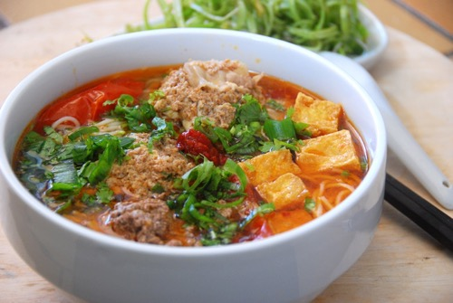
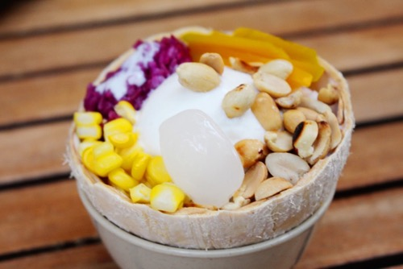
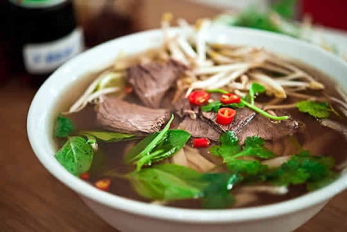

I am searching for new business opportunities and like to challenge myself!
About me|  |
Bun RieuBún riêu is a traditional Vietnamese meat rice vermicelli soup. Bún riêu cua is served with tomato broth and topped with freshwater crab. |
|  |
Kem XoiKem xôi is sweet Vietnamese dish made from sticky rice combined with ice cream, my favorite toppings are coconut ice cream and roasted peanuts. |
|  |
PhoPhở is another traditional Vietnamese soup, typically made from beef stock and herbs to which noodles and thinly sliced beef or chicken are added. |
This page has been coded during the FullStack program @LeWagon. That was probably the best experience of my entire life.